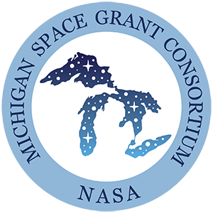

.svg)
Michigan Space Grant Consortium (MSGC)
Project Prompt:
Re-evaluate the MSGC website to improve the general user experience and bring it into compliance with WCAG 2.0 AA accessibility guidelines. Context:
The Michigan Space Grant Consortium is in charge of disbursing grants for space-related research and activities to students, academics, researchers and more in the state of Michigan. These grants sponsor anything from sending important experiments into space, to creating technologies on Earth that will improve future space exploration ventures, and even public advocacy for space exploration and research. Through my research, I learned that their website is the place where government agencies dispersing funds, individuals and organizations looking to acquire those funds, and interested private contractors intersect.Process:
As my process for this project, I used a few different methods: a full heuristic evaluation of the site, interviews, surveys, and an affinity wall, which I compiled into the final deliverable for this internship, my final report. While I went into this project expecting to help execute a full re-design of this organization's website, I quickly remembered after sinking my teeth into this project that design is all about what people need you to make, not what you want to make. What I did know is that I had to get to learning much more about web accessibility if I was going to help bring this website up to modern accessibility standards, so that learning was among the first things I did to get ideas about the changes I could make.Wordpress plugins galore, oh my!
Deliverables:
After speaking with my supervisor and understanding the boundaries of this project, I worked to find a solution to their web accessibility issues within the WordPress platform they were using. I recommended a series of plug-ins that collectively reached most of the WCAG 2.0 AA standards, and most of the remaining requirements we were able to reach through subtle changes to the site's design, such as underlining key links.The heuristic evaluation of the site was one of the first exercises I chose to do after helping to improve web accessibility, so I could get ideas for how to improve the website and get a better understanding of the current state of affairs. This also helped me generate better questions for the interviews I would later facilitate.
The heuristic evaluation is long and hard to screenshot, so here's just the whole thing!
Then came the interviews and surveys. Here are some of the opinions I got from interview participants, aggregated in the form of an affinity wall. The main takeaways from these activities was that interviewees generally appreciated the site's look and feel, but, while they also recognized there really wasn't anywhere else to go to get the things they needed from this site and this organization, they still needed more information in key areas of the site.
Survey responses for site usability: all four responses within the A grade range!
Reflections:
Working with people who were all in some way involved with academia and/or an educator themselves was interesting, and an experience I had never had before in a UX context! Everyone I spoke with was both very kind but also keen on helping to improve things so that this organization that they had all either benefited from or worked with could be its best self. They were very much an audience who was well aware of the value of UX work and how its positive impacts can be particuarly effective in helping even more people interact with this organization. I was brought on as an intern with the MSGC team with these two goals in mind, of improving the site's web accessibility and also its general usability/user experience. While I don't think I got to do everything I wanted to during this UX adventure, I was glad for the research experience it gave me, as research, done right, is the most important component of design.Hang5
Project Prompt:
Design a digital product with the goal of bringing people together socially in a vaccinated era.Context:
I signed up to partakeFront Porch
Project Prompt:
Pyet
Project Prompt:
Inter-Cooperative Council at the University of Michigan (ICC)
Project Prompt:
Create a small body of UX research on an organization of our choice; Generally improving the UX of the icc.coop website.Context:
This project, I completed as part of both my classwork (for SI 422: UX Research Methods) and a non-paid position (ICC Member Assistant) I was working in at the time. SI 422 assigned me with the first prompt, of creating a small body of research (as a project to, in a more hands-on way, learn about UX Research). With my goals at my position with the ICC being a bit more free-form at the time, I decided to fulfill two needs at once by using the ICC website as my project focus.The ICC is a student cooperative housing organization based out of Ann Arbor, MI, and can trace back its roots as part of the student community there to 1932. The ICC has a mission of being an inclusive and affordable living option for Ann Arbor students and citizens, an especially poignant mission in this time of rapidly increasing economic inequality and student debts. The ICC's website features nearly an incredible wealth of information to users, on nearly every relevant subject imaginable for members, staff, non-members and more.
Process:
As part of this body of research, I conducted an anonymous user test of the ICC website through usertesting.com, as well as a series of interviews with test participants in the site's target student demographic and a survey of current ICC members to gain an understanding of how the site was working for both prospective and current members, as it is designed to meet the informational needs of both.Due in part to the wacky interactions between the class and my ICC work, I ended up doing the interviews first, followed by the anonymous user testing and then the survey. It was super fun to use the user testing software and see the perspectives people had from a few different continents on both the website's design and the idea of cooperative living.
Deliverables:
This project was a little bit less self-directed than my other projects so far, and as such I had my work cut out for me. In addition to the research, however, I did have a little time to make a quick wireframe based on the findings from my research, and also the opportunity to present my final presentation to the ICC's Director of Communications, all of which definitely made the experience worth it. I'm definitely looking to be primarily a UX designer moreso than a researcher, but doing research-based projects like this one and my work for MSGC not only allowed me to refine my skills in research and learn from the mistakes I made, but also olidified my belief that research is the most important part of the design process.My user interviews showed a few different key findings, some of the main ones included below:
beep
Text about the user testing I did, and the results thereof.
After going through the data from the interviews, testing, and surveys, it became clear to me that users visit this site for one primary reason: to acquire or reacquire housing. In order to facilitate that goal, I knew the website would have to be streamlined, with the action of obtaining housing clearly highlighted as the main action of the site. The current website has a navbar at the top with several main options; on the mainpage, I forewent this to have only a few large key buttons in the bottom-middle of the page, so that the user can "catch a vibe" of the organization from a nice splash image on the main page but also get right down to business. Based on user feedback that the system of acquiring housing throug the site has often felt unintuitive and roundabout, I revised that flow to have a much clearer directionality, and the ability for users to skip the sections to learn about ICC housing if they're simply here to reapply. The current sections for maintenance and other information on the site are sprawling; in this revision, I've fit them under their own neat roofs, clearly separate from and secondary to the housing acquisition flow.
While I haven't finished this wireframe yet, I intend to come back to it one day, maybe next summer, molding it into a site even more reflective of the beautiful people's project that is the ICC (and even better serving the people whose project it is!).